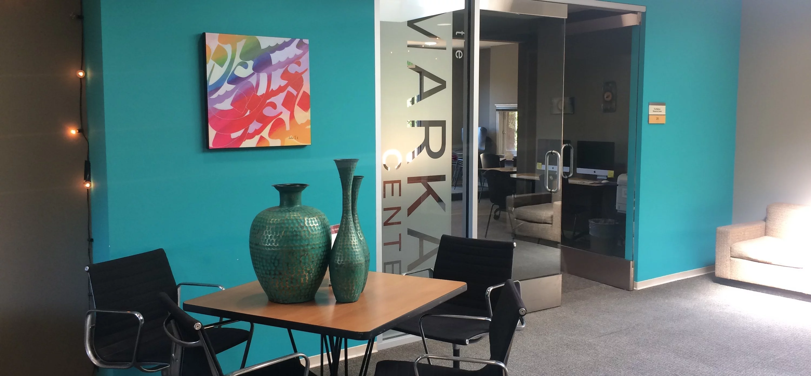

On Campus


Prayer Spaces
A few places on campus where you can pray between classes.
Old Union Prayer Room
📍 520 Lasuen Mall, Old Union 3rd Floor, Stanford, CA 94305

The Nitery
📍 514 Lasuen Mall, The Nitery 2nd Floor, Stanford, CA 94305
Green Library
📍 Meditation space behind the book shelves